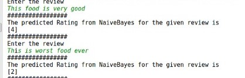
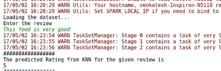

Introduction
The objective of this project is to predict the rating based on Amazon Fine Food Reviews.In a survey it was observed that, for 9 out of 10 customers, reviews are as important as personal recommendations.
Nowadays customers are likely to spend on a product only after reading positive reviews. Rating depicts the sentiment of the review and how strongly a user is recommending the product.
Prediction of rating of a product based on reviews, helps a user to decide whether to buy the product or not just looking at ratings instead of reading all the reviews. Amazon Fine Food Review data set consists of about 568,454 food reviews Amazon users left upto October 2012.
Dataset
We have used Amazon Fine Food Review data set provided by Amazon on Kaggle. The data set consists of 568,454 food reviews Amazon users left up to October 2012. The data set is included in a single CSV file, Reviews.csv with attributes : Id, ProductId, UserId, ProfileName, HelpfulnessNumerator, HelpfulnessDenominator, Score, Time, Summary, Text. The algorithms implemented in the project use Score and Text attributes which represent Rating and Review respectively. The size of the data set is 251MB.
Tasks and Approach
The project uses classification approach to predict ratings and classify reviews. It includes implementation of two algorithms: K-Nearest Neighbors & Naive Bayes.
The tasks involved are-
- Pre-processing the data which includes removal of stop words, stemming, lemming, removal of all non-alphanumeric characters
- Implementation of KNN and Naive Bayes algorithms from scratch in pyspark
- Determining the accuracy of the algorithms for the data set
- Implementation and Comparison of the accuracy with scikit-learn libraries for KNN and Naive Bayes
- Taking review from user in console, and predicting the rating based on the model built
Algorithms
K-Nearest Neighbors and Naive Bayes Algorithms have been implemented in pyspark to classify reviews.
Naive Bayes Algorithm
Naive Bayes methods are a set of supervised learning algorithms based on applying 'Bayes' theorem with the 'naive' assumption of independence between every pair of features.
In other words, Naive Bayes is a conditional probability model.
It is an intuitive method that uses probabilities of each attribute belonging to each class to make a prediction.
The multinomial Naive Bayes with smoothing has been implemented. To classify, we calculated probabilities of the review belonging to each rating and then selected the class value with highest probability.
We have performed computations by summing logs of probabilities rather than multiplying probabilities for underflow prevention.
Formula :

K-Nearest Neighbors Algorithm
K-Nearest Neighbors algorithm is an instance-based algorithm and belongs to the family of competitive learning and lazy learning algorithms. For the prediction of rating, the algorithm searches through the training dataset for the k most similar instances. Hamming distance and Levenshtien distance has been used to classify reviews.
Results
Naive Bayes Algorithm: Output
| Value of alpha | Accuracy |
|---|---|
| 2 | 52.38% |
| 3 | 52.78% |
| 4 | 53.27% |
| 5 | 53.46% |
For user input:

K-Nearest Neighbors Algorithm: Output
| Value of K | Accuracy |
|---|---|
| 25 | 64.24% |
| 50 | 71.39% |
For user input:

Task Division
Khullar, Nikhil
# Implemented the K-nearest neighbor algorithm
# Taking user review from console and predicting the rating based on the model built using KNN and Naive Bayes
Patel, Ayush
# Retrieving, Cleaning and preprocessing the data. For example, removing the stop word, non-alphanumeric characters, Stemming and lemming
# Implementation of Naive-Bayes algorithm with scikit-learn libraries and comparison of the accuracy
Rajagopalan, Sairam
# Implemented the prediction model using Naive Bayes algorithm
# Implementation of KNN algorithm with scikit-learn libraries and comparison of the accuracy
# Calculating the accuracy of the fitted data
Sharma, Harshal
# Implemented the prediction model using Naive Bayes algorithm
# Implementation of KNN algorithm with scikit-learn libraries and comparison of the accuracy
# Calculating the accuracy of the fitted data